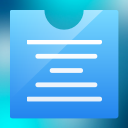

Honestly, I've seen a lot of people retweet very bad people because they've forgotten who that person is. However, this can be used for many positive purposes such as:
There are two parts to Twitlist, the extension, and the website.
Once the extension has been installed, go to twitter.com and then look for this icon in your top bar:
Note that this icon won't appear if you're on any other website!
Click on the icon to open a popup. The popup will contain a green button asking you to "sign in with Twitter". Do it! A large popup will open to do the login. When it's done, it'll go away and you should be logged in.
Every tweet should have a little rectangular box under the person's name that says "add a note about this user".
To add your first note, click on any "add a note about this user" link under a user's name. This will take you to the website (twitlist.net). If it's your first time, and it should be, you will be asked to log in again.
Sorry about that, but it can't be helped, a website and an extension are two different things. Going forward you probably won't have to log in again, unless you deliberately log out.
Type your note about this user in the large input box, and click "add note".
It should have added the first row to your list.
Also, if you go back to your Twitter tab, this note should appear on this user's tweets.
Lists are set to private by default, which means no one else can see your list. At the bottom, it should say, "This list can be seen by" and the selected option should be "nobody". The options are:
Sure, signing up on the website lets you look at other people's lists they've shared with you. Anyone can look at public lists ("shared with everyone") without having an account.
There's no UI to manually add entries if you're not coming from the extension but you could do it by messing around with the URL params. May add a UI for this in the future.
I added that functionality but it's very tricky and I'm afraid something may go wrong. Maybe after all the existing bugs have been worked out!
That seems like a lot of trouble.
Uh... let's try the Github issues page for this repo or DM me on Twitter if you know my handle.